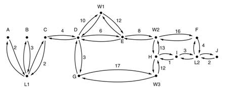

◉ Roteamento OSPF
No ano de 1988, a Internet Enginnering Task Force iniciou o trabalho em um protocolo de
roteamento denominado de OSPF - Open Shortest Path First, que se tornou padrão em 1990.
Após isso, fornecedores começaram a implementar em seus equipamentos (TANEMBAUM, 2003).
O OSPF é classificado como um protocolo IGP. Isso significa que o mesmo distribui informações de roteamento
entre roteadores pertencentes a um único sistema autônomo (MOY, 1998, p. 5).
O OSPF, nos dias atuais, encontra-se na versão 2, em ampla utilização. Tal versão é especificada na RFC 2328.
Uma versão 3 do mesmo também foi concebida, para utilização em equipamentos com IPV6 .
O OSPF foi concebido como sucessor do RIP e como tal tem uma série de características avançadas.
Em seu âmago, contudo, ele é um protocolo de estado de enlace que usa broadcasting de informação de
estado de enlace e um algoritmo de menor custo dijkstra (KUROSE & ROSS, 2009, p. 294).
Quando o OSPF foi pensando, o mesmo teria que atender a alguns requisitos. Primeiramente, o novo
protocolo deveria ser amplamente divulgado na literatura especializada, assim “O” de (Open – Aberto)
da sigla OSPF. Já o segundo ponto era que o OSPF deveria ser capaz de analisar um número superior de
métricas com relação ao RIP. Outro requisito era que este novo protocolo fosse dinâmico e capaz de
realizar a convergência rapidamente, diferentemente do RIP. Já outra novidade do OSPF, era sua
capacidade de admitir o roteamento baseado no tipo de serviço. Ou seja, o novo protocolo deveria
rotear o tráfego em tempo real de uma determinada maneira e outro tipo e tráfego de maneira distinta.
No protocolo IP existe um campo Type of service, entretanto, nenhum protocolo de roteamento fazia uso
do referido. Logo, tal campo foi incluído no OSPF (TANEMBAUM, 2003).
Um quinto requisito, era que o OSPF deveria balancear a carga, dividindo- a por várias linhas,
já que a maioria dos protocolos anteriores enviavam todos os pacotes apenas pela menor rota.
Outro dado importante a se destacar foi que em 1988 o crescimento de tráfego foi tanto que
nenhum roteador era capaz de conhecer a topologia da rede inteira. O novo protocolo deveria
ser projetado de forma que nenhum roteador fosse obrigado a conhecer a topologia. Também foram
levados em consideração alguns melhoramentos de segurança. E, por fim, era necessário tomar
providências para conectar os roteadores ligados à internet por meio de um túnel, pois os
protocolos anteriores não o faziam muito bem (TANEMBAUM, 2003).
O OSPF é compatível com três tipos de conexões de redes: links ponto a ponto, redes de multiacesso
com difusão e redes de multiacesso sem difusão.
Uma rede de multiacesso possui vários roteadores e cada um deles pode se comunicar com todos os outros.
Praticamente todas as LANs e WANs possuem tal propriedade (STALLINGS, 2003).
Na Figura abaixo mostra-se um AS, conectando todos os tipos de redes.
O OSPF possui um funcionamento transformando o conjunto de redes, roteadores e linhas reais em um grafo
orientado, ao qual se atribui um custo (distância, retardo etc.) a cada arco. Após, o protocolo realiza
o cálculo do caminho mais curto com base nos pesos, como mostra a representação gráfica da Figura.
Uma conexão serial entre dois roteadores é representada por um par de arcos, um em cada sentido.
Seus pesos podem ser diferentes. Uma rede de multiacesso é representada por um nó para a própria
rede e por um nó para cada roteador

O que o OSPF faz, fundamentalmente, é representar a rede real como um grafo e, em seguida, calcular
o caminho mais curto de cada roteador para cada outro roteador.
Muitos ASs da Internet são grandes e difíceis de gerenciar. O OSPF permite que eles sejam divididos
em áreas numeradas; uma área é uma rede ou um conjunto de redes Contíguas (TANEMBAUM, 2003, p. 486).
Cada área mencionada anteriormente possui seu próprio algoritmo de roteamento de estado de enlace OSPF,
sendo que cada roteador, em uma área, transmite seu estado de enlace a todos os outros roteadores da área.
Com isso, detalhes internos permanecem invisíveis para todos os outros roteadores externos
(KUROSE ; ROSS, 2009).
O conceito de áreas traz alguns benefícios, em que o mais relevante destes seja a possibilidade de
tornar a rede mais escalável. A rede pode ser dividida em áreas, de uma forma hierárquica, sendo
possível a adição de novas redes e, consequentemente, áreas de uma forma facilitada.
Em cada área, um ou mais roteadores de borda são encarregados pelo encaminhamento de pacotes para
fora desta área. Assim, uma área OSPF no AS é configurada para ser a área de backbone. A principal
tarefa da área de backbone é rotear tráfego entre as outras AS (KUROSE ; ROSS, 2009).
Um diagrama de rede OSPF hierarquicamente estruturado é mostrado na Figura. Podem-se identificar
quatro tipos de roteadores nesta figura.
• Roteadores Internos, que ficam internamente em uma área;
• Roteadores de borda de área, que conectam duas ou mais áreas;
• Roteadores de backbone, que ficam no backbone;
• Roteadores de fronteira de AS, que interagem com roteadores de outras SAs.
Quando um roteador é iniciado, o mesmo envia um mensagem HELLO por todas as suas linhas ponto a
ponto, transmitindo-a por difusão nas LANs até o grupo que consiste em todos os outros roteadores.
Já para as WANs, o roteador precisa de informações de configuração para saber quem contatar. Com
isso, os roteadores descobrem quem são seus vizinhos (TANEMBAUM, 2003).
O OSPF troca informações entre roteadores adjacentes; tais informações não são as mesmas trocadas
entre dispositivos vizinhos, pois não é útil fazer com que cada roteador de um LAN se comunique com
todos os outros roteadores da mesma LAN. Dessa forma, um roteador é eleito o roteador designado.
Ele é considerado adjacente a todos os outros roteadores em sua LAN e faz a troca de informações
com eles. Já dispositivos de camada de rede que não são vizinhos, não realizam a troca de tais dados.
O dispositivo designado de reserva é sempre mantido atualizado, com o objetivo de facilitar a transição,
caso o roteador designado principal venha a ter algum problema e falhar (TANEMBAUM, 2003).
Durante o processo normal, cada roteador emite constantemente, por inundação, mensagens LINK STATE UPDATE
para cada um de seus dispositivos adjacentes. Nessa mensagem estão contidas informações como estado e
custo usados no banco de dados da topologia. As mensagens possuem um serviço confiável, ou seja, são
confirmadas. As mensagens também possuem número de sequência, onde o roteador pode ver se uma mensagem
LINK STATE UPDATE recebida é antiga ou recente. Outra situação de tais mensagens enviadas é se a linha
é ativada ou desativada, ou quando os custos se alteram (TANEMBAUM, 2003).
Também são enviadas mensagens DATABASE DESCRIPTION, as quais fornecem os números de sequências de todas
as entradas de estado de enlace mantidas no momento pelo transmissor. Assim, é realizada uma comparação
com seus próprios valores do transmissor, em que o receptor pode determinar quem tem valores mais recentes.
A usualidade dessas mensagens é quando o link é interrompido.
Cada parceiro pode solicitar informações de estado de enlace um ao outro, usando mensagens LINK STATE REQUEST.
Assim, o roteador adjacente verifica quem têm dados mais recentes e as novas informações que estão sendo
divulgadas. Todas as mensagens que foram citadas são envidas por pacotes IP (TANEMBAUM, 2003).
Como foi mencionado, o OSPF fica constantemente enviado mensagens para manter a rede atualizada com relação
ao seu status. O tempo que as mensagens HELLO são enviadas é a cada 10 segundos. Isso pode parecer que
esse protocolo usa muita largura de banda, ao passo que o RIP envia a cada 30 segundos. Entretanto, no
OSPF estes pacotes, que são enviados no tempo citado, são muito reduzidos com relação aos do RIP, pois
o mesmo envia sua tabela de roteamento inteira a cada 30 segundos. Logo, o OSPF só enviará todas as
informações se tiver alguma alteração de topologia na rede, ou seja, alguma queda em algum link ou
adição de um novo link ou roteador (FILIPPETTI, 2008).
Outra vantagem do OSPF com relação ao RIP é seu método de envio. O RIP usa broadcasting, ou seja,
envia para o que estiver conectado. Já o OSPF usa o método de multicast, envia só para um grupo,
diminuindo assim a utilização de largura de banda (STALLINGS, 2003).